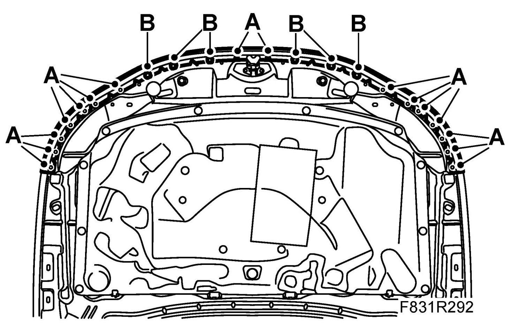

Hood Weatherstrip: Service and Repair
Bonnet Seal
To remove
1. Remove the weatherstrip.
- Use removal tool 84 71 179 to remove the clips (A).

- Remove the other 6 anchorage points (B).
To fit
1. Fit the weatherstrip.
- Fit the 6 anchorage points (B).
- Fit the clips (A).